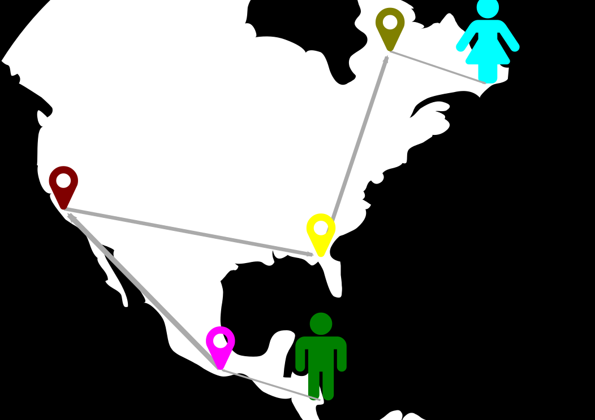

Wer sind wir?
Woher kennt man den CCC?
BTX-Hack

Am 19. November 1984 wurden 135.000 DM von der Haspa abgehoben, die nach der Aufdeckung der Sicherheitslücke zurückgezahlt wurden.
Nedap-Hack
Staatstrojaner
Was machen wir?
Vorträge
Bastelworkshops

Wissenswertes
Wie finanzieren wir uns?
Heute!
Unterwegs im Netz
Was bedeutets sicheres
Surfen?
Angriffe & Diebstahl
Ziele von Angreifern
- Zugänge (Accounts)
- Rechner
Wie schütze ich mich
vor Angreifern?
- Software aktuell halten
- End zu End Verschlüsselung
- HTTPS Everywhere
- Software nur aus vertrauenswürdigen
Quellen installieren - Keine Links in unerwarteten E-Mails anklicken
Datensammler
- Persönliche Daten
- Bewegungsprofile
- Kontakte
Was ist Tracking?
Bestellt eine einzelne Pizza
(Adresse, Essgewohnheiten, Familienstand)
Informierst sich über gebrauchtem Polo (Geldrahmen, Mobilität)
Gefällt "Mitten im Leben" auf Facebook (Soziales Verhalten)
Öffnungszeiten des Arbeitsamtes (Job)
Kreditwürdig?
Der Facebook-"Like"-Button
Virenscanner
Passwörter, anständig
"Nur ein langes Passwort ist ein gutes Passwort."
(52 Zeichen)
6 Zeichen: 20 Sekunden
10 Zeichen: 5 Jahre
(96 Zeichen)
6 Zeichen: 13 Minuten
10 Zeichen: 2108 Jahre
Nützliches:
- Nicht überall dasselbe Passwort!
- Wörter lassen sich leichter erraten als zufällige Zeichen.
- aber: Ganze Sätze als Passwörter sind lang und leicht zu merken!
Ist das sicher?
Passwort-Verwaltungsprogramme
- 1Password (Mac)
- Keepass (Mac, Win, Linux)
- OS-X-Schlüsselbund (Mac)
- Seahorse (Linux)
- Browser Password Manager
Verschlüsselte E-Mail

Warum verschlüsseln?
- Jeder hat etwas zu verbergen
- Postgeheminis?
- Die E-Mail ist doch nur für mich selbst und den Empfänger!?
E-Mails sind Postkarten
Bob sendet Alice eine E-Mail

Postkarten gehen durch
viele Hände

Wie funktioniert E-Mail-
Verschlüsselung?
- Basis: schweres mathematisches Problem (Computer brauchen mehrere Jahre zum Knacken)
- Man benötigt ein Schlüsselpaar aus einem

|

Hürden & Stolpersteine
- Absender, Empfänger und Betreff bleiben sichtbar
- Sicherer Schlüsseltausch
- Geheimhaltung des privaten Schlüssels
Vorteile
- Private Kommunikation, z.B. Schutz vor
- dem Provider,
- dem Staat und Geheimdiensten.
- Wer verschlüsselt, kann auch signieren (vor Fälschung schützen).
- Grundrauschen erhöhen!
Viel Spaß!
chaospott.de@foobarev
c3e
cryptoparty@chaospott.de
01CB 5D67 4100 6A17 2492 739D 4592 4F8A 867E D719